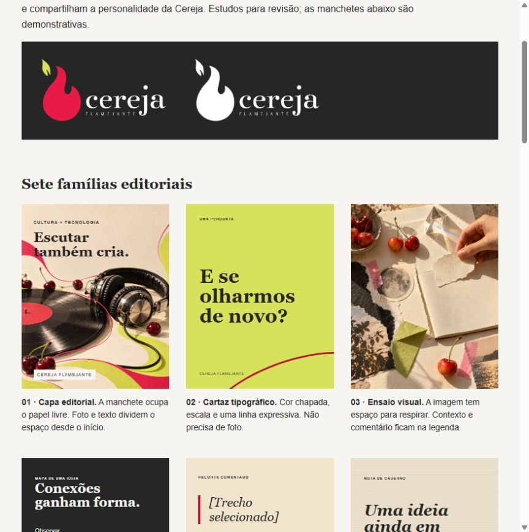
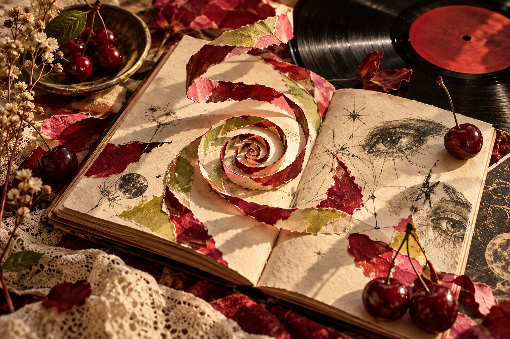
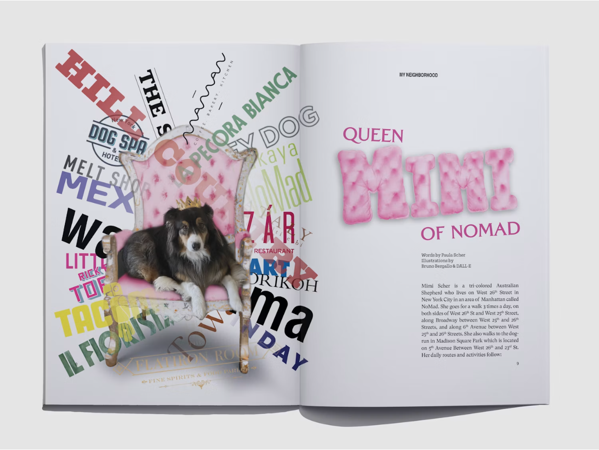
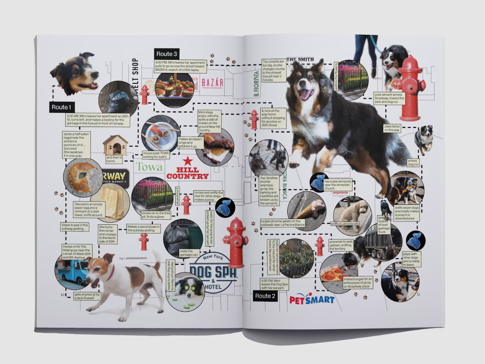
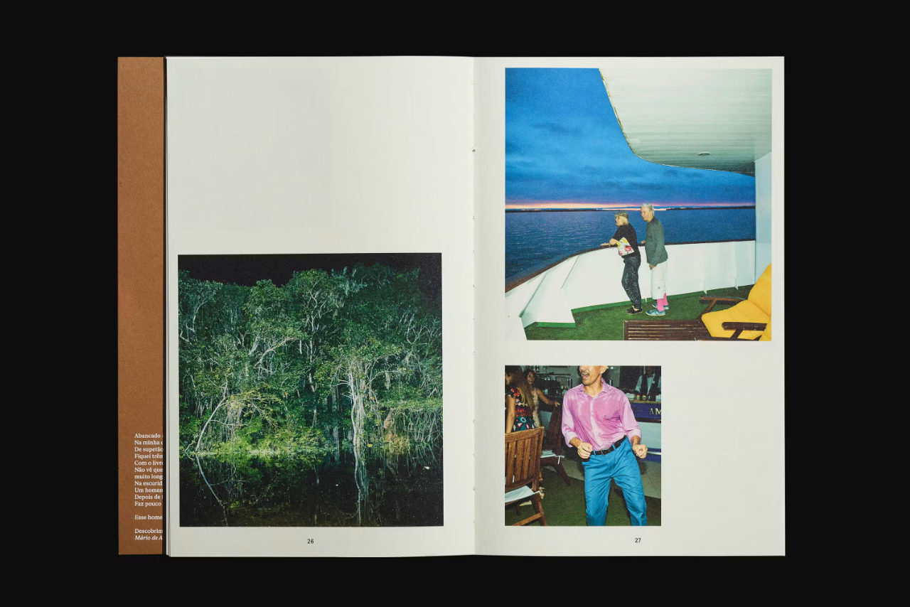
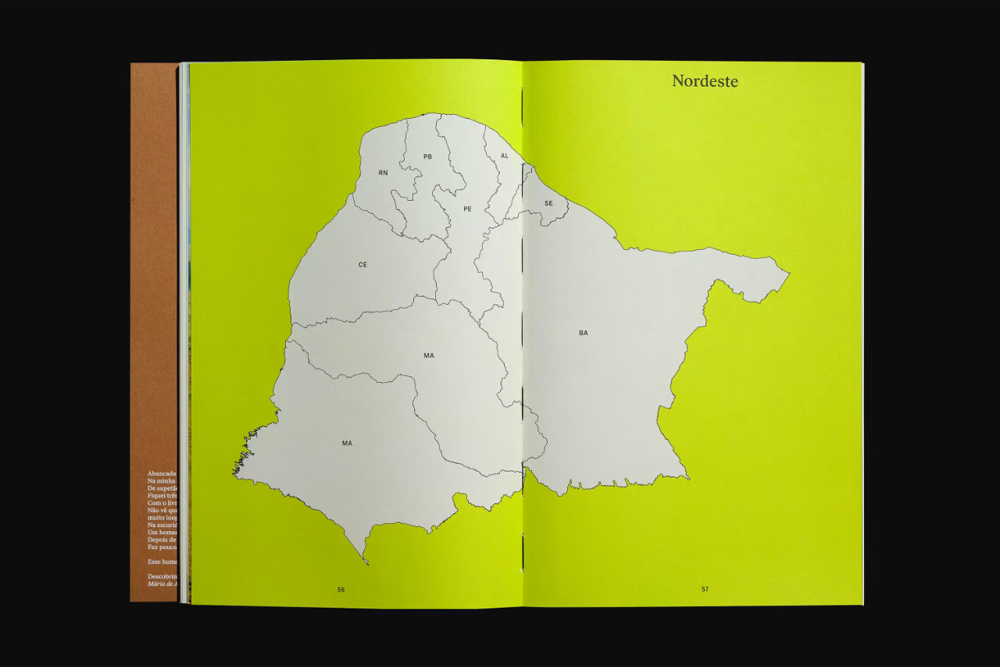
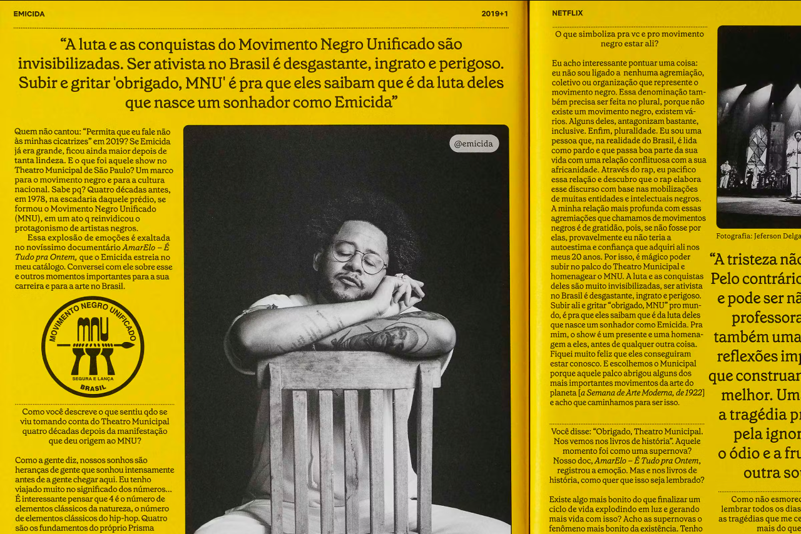
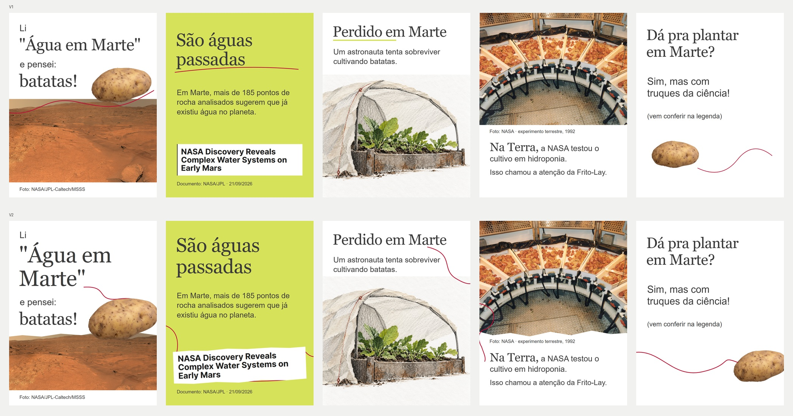

8 exemplos visuais concretos + 2 coleções escolhidas por Kell. Afinidade com o conjunto reconhecida; aprovação individual dos candidatos continua pendente.
Moodboard · referências concretas
U1 · user-selected reference
Seleção: Kell. URL fornecida por Kell e coleção elogiada por ela.
Ensina: Coleção de descoberta para layout social; selecionar exemplos pela relação entre texto, fotografia e sequência.
Limite: A tela de login cobre a galeria pública. Nenhum pin individual ou sequência completa validado. Não derivar uma norma visual das miniaturas.
#031: Ampliar repertório social dos frames 1/2 e transições, quando houver exemplos acessíveis.
U2 · user-selected reference
Seleção: Kell. URL fornecida por Kell e coleção elogiada por ela.
Ensina: Coleção escolhida por Kell para investigar identidade, gesto, composição e integração tipográfica.
Limite: O leitor web retornou 403; navegador carregou o board com login sobreposto. Autores dos pins não identificados. Não atribuir os trabalhos à curadora.
#031: Investigar composições sociais, sem substituir os exemplos concretos abaixo por uma coleção não examinada integralmente.
A1 · approved visual reference
Seleção: Kell, no escopo do catálogo. Registro de aprovação de 04/10 preservado; capa editorial e famílias por função.

Ensina: Foto e título dividem uma área planejada. O cartaz muda a densidade sem perder a paleta e a presença tipográfica.
Limite: Aprovação do catálogo não aprova toda arte no diretório. Não copiar metadados, textos demonstrativos ou estrutura de convite para cada frame.
#031: 1/2 com força própria; unidade pode sobreviver a distribuições muito diferentes.
A2 · approved visual reference
Seleção: Kell. Feedback explícito no histórico: “amei a capa que vc criou”. Aprovação de imagem, não de layout social.

Ensina: A espiral reúne assuntos; sombra, papel e sobreposição fazem parte de uma mesma cena. As bordas cortam objetos com propósito.
Limite: Não levar livro, vinil ou espiral para Marte. Capa de newsletter não usa texto; este exemplo não resolve tipografia.
#031: 1/3/5: matéria e objetos constroem vínculo; não adicionar itens só para sinalizar colagem.
S1 · system-discovered candidate
Seleção: Codex. Galeria primária Pentagram / Paula Scher, inspecionada. Kell reconhece afinidade do conjunto; sem aprovação individual deste exemplo.

Ensina: O objeto encobre parte do campo tipográfico, criando frente e fundo; o título do outro lado oferece uma segunda entrada.
Limite: Não copiar densidade, lettering, cadeira ou cão. O projeto informa uso de imagem gerada; não importar isso como documento científico.
#031: 1: a batata conversa com a manchete em um plano editorial, sem parecer instalada no terreno.
S2 · system-discovered candidate
Seleção: Codex. Galeria primária Pentagram / Paula Scher, inspecionada.

Ensina: Percurso e recortes ligam lugares identificáveis. O gesto gráfico tem referentes e conta o trajeto.
Limite: Não copiar mapa, setas, caixas ou densidade. Não é evidência de conversão, nem modelo de carrossel científico.
#031: 1→2 ou 4→5: linha/forma precisa ligar um pensamento a um objeto; não decorar todas as bordas.
S3 · system-discovered candidate
Seleção: Codex. Galeria PORTO ROCHA; publicação de Mico Toledo. Imagem original inspecionada.

Ensina: Uma foto baixa à esquerda contrapõe duas à direita. O vazio superior altera ritmo e a diferença de escala organiza leitura.
Limite: Não copiar página de livro, fotografias ou corpo minúsculo. Vazio não é licença para afastar textos que formam uma frase.
#031: 3/4: pausa e documento ganham composições distintas, sem foto obrigatoriamente abaixo de um bloco de título.
S4 · system-discovered candidate
Seleção: Codex. Galeria primária PORTO ROCHA, inspecionada.

Ensina: Uma massa dominante atravessa a dobra; quase nenhum texto disputa com ela. A abertura funciona como entrada independente.
Limite: Não desenhar mapa dos 185 alvos nem importar uma cor sem função. Dobra impressa não comprova comportamento de swipe.
#031: 2: entrada autônoma por título e massa visual. Continuidade lateral deve ser testada, não apenas descrita.
S5 · system-discovered candidate
Seleção: Codex. Galeria primária PORTO ROCHA / Netflix Tudum, inspecionada.

Ensina: Foto central e comentário ocupam um campo editorial compartilhado. Mudanças de escala tipográfica ancoram a imagem.
Limite: Não copiar colunas, densidade de almanaque, retrato ou marca. A #031 precisa continuar legível no celular.
#031: 4: imagem NASA governa a composição; texto e crédito se relacionam com suas zonas livres, sem virar uma ficha separada.
X1 · anti-reference
Seleção: Kell, como rejeição visual. Kell reprovou V1/V2 visualmente. PASS técnico não constitui aprovação de direção de arte.

Ensina: V1 empilha título, comentário, foto e crédito. V2 muda escala e bordas, mas conserva a separação. Rabiscos continuam dispensáveis para a leitura.
Limite: Preservar legibilidade, fatos, batata e possibilidade de gesto; não reutilizar posições ou polígono irregular como solução aprovada.
#031: Todos: avaliar relações e sequência, não contar quantos elementos Flame foram adicionados.
Taste Fingerprint provisório · Cereja Flamejante
Status: hipótese visual para revisão de Kell, 2026-10-06. Não é template, skill alterada ou regra canônica. A afinidade do conjunto foi explicitamente reconhecida por Kell; aprovação individual dos candidatos continua pendente.
Base: A1/A2 aprovados no escopo registrado; elementos batata/rabisco apreciados por Kell; candidatos S1–S5 inspecionados; rejeição X1. U1/U2 são `user-selected reference`, com acesso parcial: não inventar uma leitura dos pins que a tela de login impediu examinar. A origem de cada inferência fica no registro de seleção.
Gramática que aparece no conjunto
Esta leitura descreve preferências recorrentes, não uma prova de que cada candidato já é Cereja. Não fixa fonte, paleta nova, grid, número de objetos ou efeito de textura. Flame continua autoridade de marca; este documento propõe a camada de taste para avaliação.
Padrões que destoam deste universo
• Faixas independentes de título, explicação, foto e crédito que poderiam trocar de assunto sem mudar a composição: X1.
• Serrilha poligonal, rotação e linha curva sem relação com conteúdo, chamadas de “organicidade”: X1.
• Mesma estrutura e mesmo peso em todas as páginas; identidade reduzida a cor e rodapé: X1 e contraste com A1/S3/S4.
• Foto documental tratada como textura de fundo ou coberta por enfeite: contraria o papel de evidência da #031.
• Colagem usada como estoque de stickers, textura automática ou maximalismo sem seleção: risco inferido dos candidatos, não rejeição de todo trabalho externo.
• Acabamento genérico de apresentação, cards uniformes e estética futurista como atalho para tecnologia: coerente com limites já registrados no Flame.
• Humor que transforma todo assunto em mascote, truque visual ou slogan. O objeto precisa participar do pensamento, não apenas chamar atenção: hipótese a validar.
Como usar depois da aprovação
Ler conteúdo e função; escolher qual relação do repertório ajuda; compor; comparar com um exemplo aprovado e um anti-exemplo; julgar a leitura e a sequência. Não montar um checklist de efeitos para inserir em cada frame.
O fingerprint permanece provisório mesmo que uma aplicação à #031 avance. Kell pode aprovar dimensões, recusar interpretações ou limitar sua aplicação por contexto. Nada foi incorporado automaticamente ao Núcleo ou às skills.
Parada: KELL — VISUAL CALIBRATION GATE. Nenhuma V3 produzida.
Tensões de composição
Um elemento de presença forte encontra um comentário ou objeto deslocado. Escala, proximidade e sobreposição estabelecem a relação
Base: A1, A2, S1; alta para presença/colagem, média para transposição social
Variação: A tensão pode vir de corte, massa, silêncio ou encaixe; não exige diagonal
Tipografia × imagem
A tipografia participa do campo visual: encontra papel livre, margem, objeto ou região da foto. Tem hierarquia decidida
Base: A1 aprovado; S1/S5 candidatos; média/alta
Variação: Um cartaz só tipográfico também pertence ao repertório. Nem toda peça precisa de foto
Colagem/recorte
O encontro entre materiais torna conexões visíveis. Objetos conservam identidade; a montagem pode ser assumida
Base: A2 aprovado e batata apreciada; S1 candidato; alta
Variação: Pode ser um único recorte ou uma cena densa. Quantidade de recortes não mede qualidade
Gesto manual e imperfeição
A marca sugere atenção de alguém: sublinhar, cercar, conectar, insistir. Imperfeição corresponde a matéria ou gesto
Base: Rabiscos apreciados por Kell; S2 candidato; alta para presença, média para função proposta
Variação: Linha pode faltar onde foto e tipo já bastam. Não simular humanidade com ruído aleatório
Densidade × respiro
Há prazer na descoberta e no detalhe, com pausas que deixam uma ideia crescer. Vazio organiza o encontro
Base: A1/A2, S3/S4; média/alta
Variação: Peças densas e silenciosas podem conviver. Sem proporção fixa ou obrigação de minimalismo
Assimetria
O equilíbrio é óptico: massas de tamanhos e posições diferentes se compensam
Base: A2, S1/S3; média/alta
Variação: Uma composição central pode funcionar se o conteúdo pedir; assimetria não é obrigação
Matéria/textura
Papel, fotografia, recorte, sombra e desenho sugerem contato e história. Textura apoia a ideia e não encobre leitura
Base: A2 e A1; alta
Variação: Fundo limpo e cor chapada continuam válidos. Não aplicar grão/fita/papel como filtro automático
Humor, estranhamento e sofisticação
Um objeto familiar encontra um assunto inesperado. A surpresa nasce da associação editorial e de uma composição cuidadosa
Base: Batata da #031 aprovada como elemento; A2; candidata S1; média
Variação: Humor pode ser discreto. Não requer personagem, meme, rosto ou infantilização de todo assunto
Continuidade/descoberta
A sequência revela relações: corte incompleto, resposta visual, mudança de escala ou retorno de um objeto
Base: S2/S3/S4 e pedido explícito de Kell; média, ainda sem execução social validada
Variação: Não precisa ser panorama contínuo. Pausa e descontinuidade também podem conduzir leitura
Fingerprint completo: evidência, confiança e limites